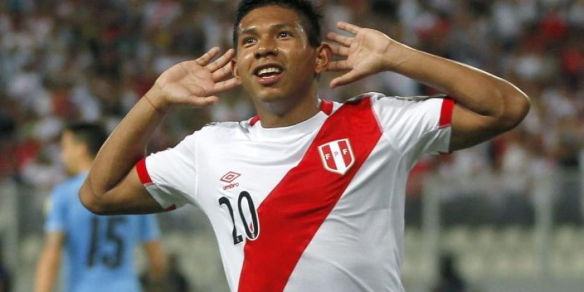

Historial del jugador en competiciones en la fifa
- 21 partidos jugados/8 goles
Datos personales
- nombre:Edinson flores
- Nacimiento:Lima.Peru-14 de mayo de 1994
- Edad:23 años
- Altura:1.70m(5ft 7in)
- Apodo:Orejas. Edy
Inicios
- Universitario de deportes
- Paso por villarreal y retorno a univercitario
- Aalborg B.K
Seleccion nacional
- participaciones en la copa america
Referencia
trayectoria
Universitario de deporte
folres fue formado en la Escuela de futbol Hector Chupitaz ubicada en el distrito de de comas donde entreno desde el año 2004 hasta 2008.Luego fue llevado por "Tito" Chumpitas a las diviciones menoresde Univercitario de Deportes.El 31 de marzo de 2011.Edinson flores y andy polo fueron promovidosal primer equipo por el entrenador Jose del Solar.Luego de que cada uno marcara 3 goles en el campeonato Sudamericano de Futbol sub-17 de 2011.
En la copa Libertadores sub-20 de 2011 realizada en el Perú fue elegido como el mejor jugador del torneo
El 21 de abril de 2012,anoto su primer gol a nivel profecional
Paso por villarreal y retorno a Univercitario
El 31 de agosto de 2012 fue transferido al Villarreal C.F.de España.El 1 de diciembre,anoto su primer gol ante el Levante "B" que termino con marcador de 1-1.El 28 de marzo de 2014,el Villarreal oficializo en su pagina web el taraspazo de Flores al club Univercitario del Peru
Participaciones en copa america
| Copa | Sede | Resultado | Partidos | Goles | Asist |
|---|---|---|---|---|---|
| Copa america | Estados Unidos | Cuartos de final | 4 | 1 | 1 |
Estadisticas
Clubles
| Club | Temporada | Liga | Copas | Total |
|---|